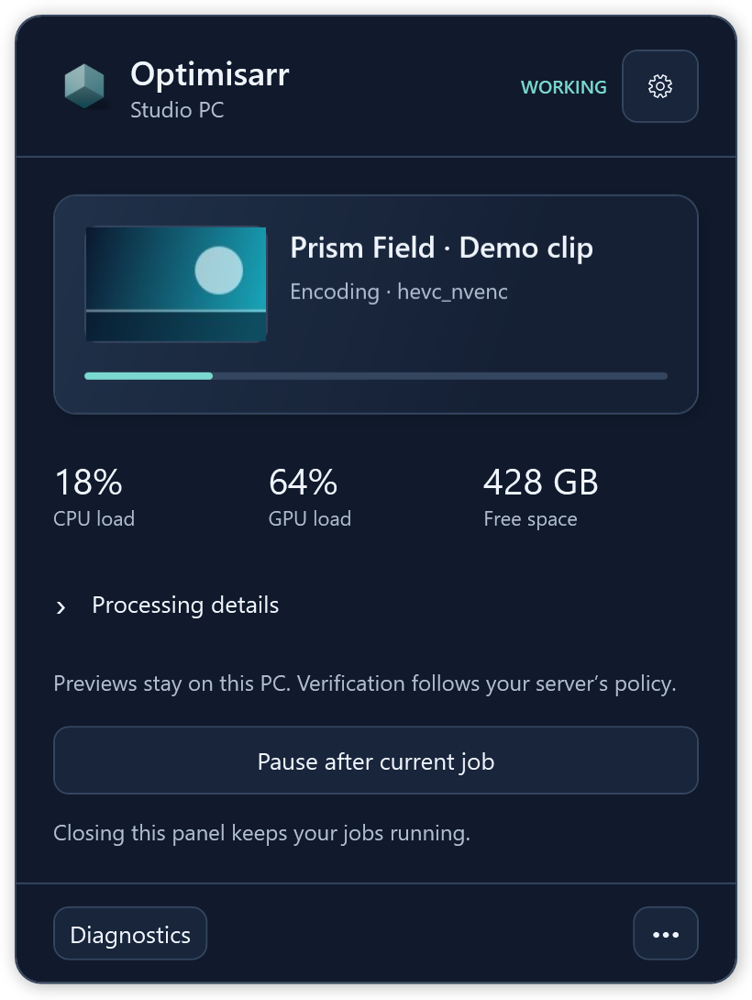
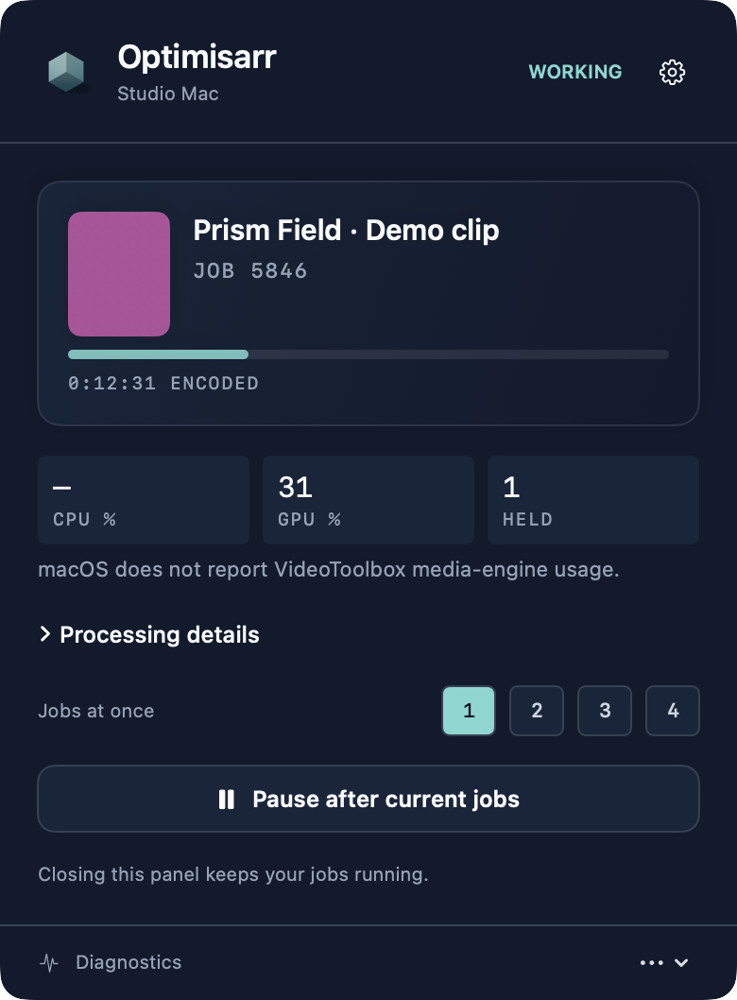

OPTIMISARR SIDECARS · CURRENT NATIVE VIEWS
Compact Monitor, on both desktops.
Actual WPF and AppKit renders from the current application, with the Precession icon, rounded panels and each platform’s shipped controls. Screenshots use fabricated dummy media created for documentation, invented machine names and example server addresses. No copyrighted media material is used.
Activity shows the current stage and resource readings. The animated encode indicator is not a percentage or completion estimate.
Windows tray

The Windows service works independently of the tray. The panel samples a small frame from the local source while viewed, with a labelled fallback for unsupported media.
Mac menu bar

The Mac panel retains frame previews and one-to-four-job controls. macOS GPU readings do not report VideoToolbox media-engine usage.